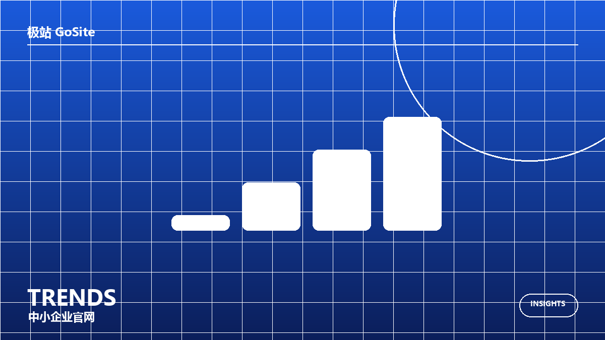
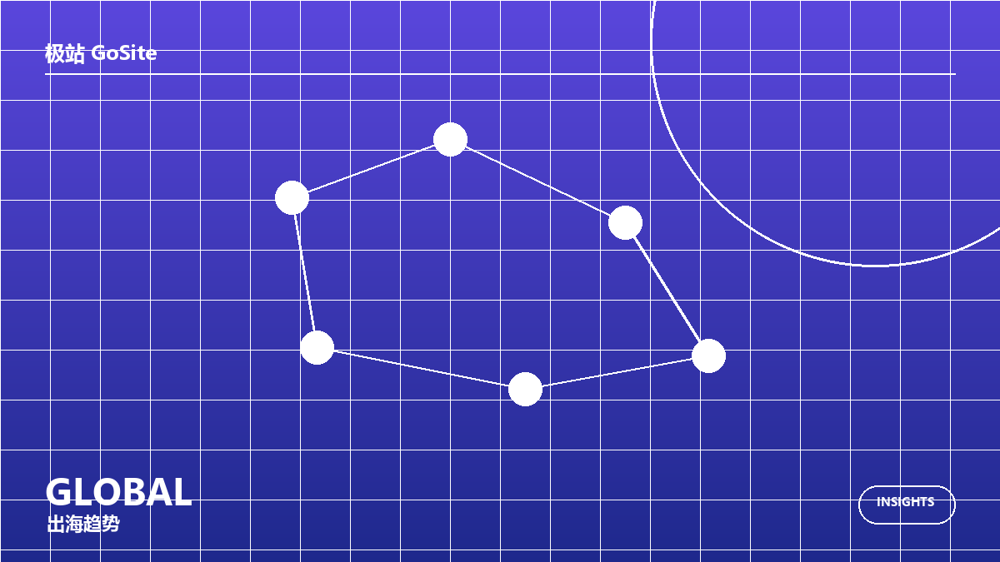
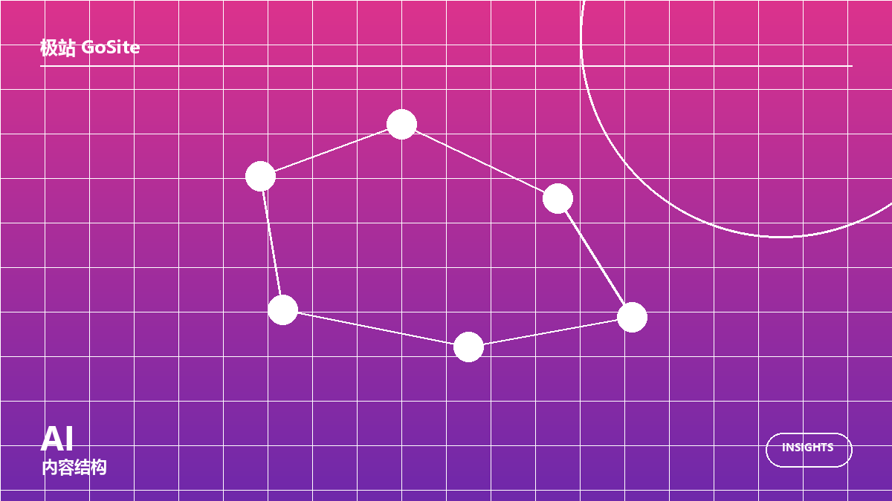
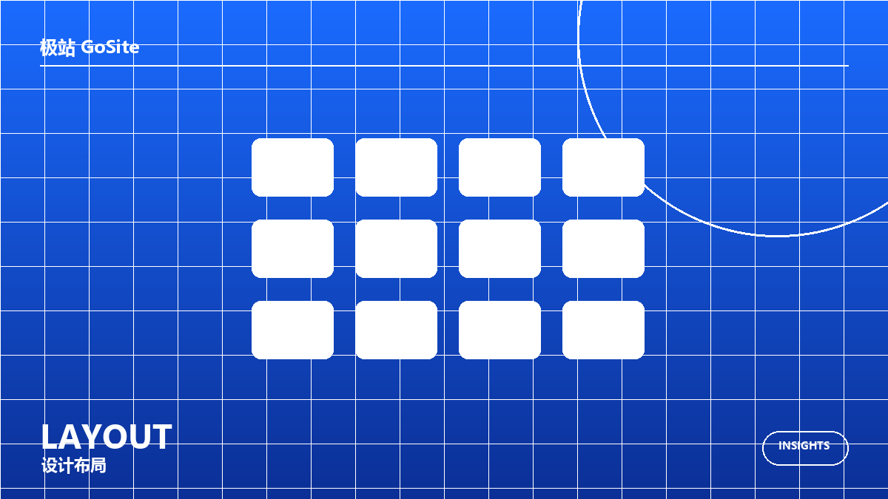
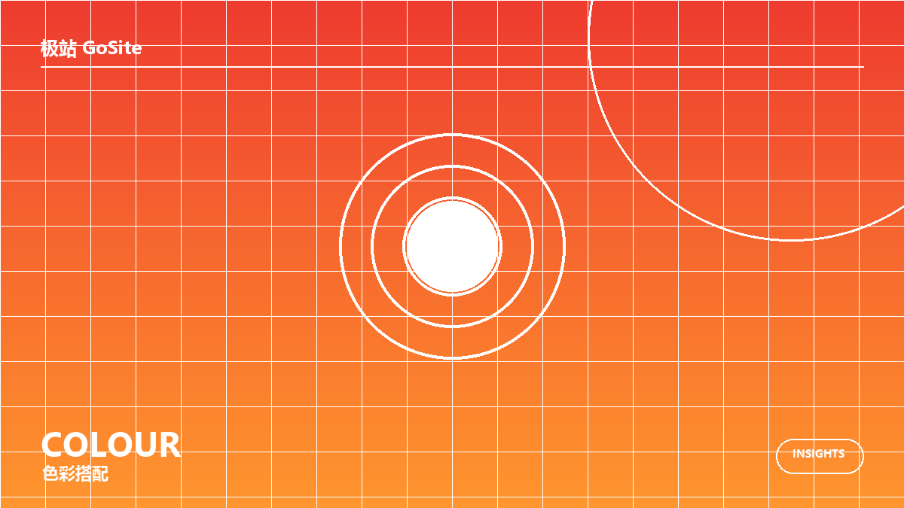
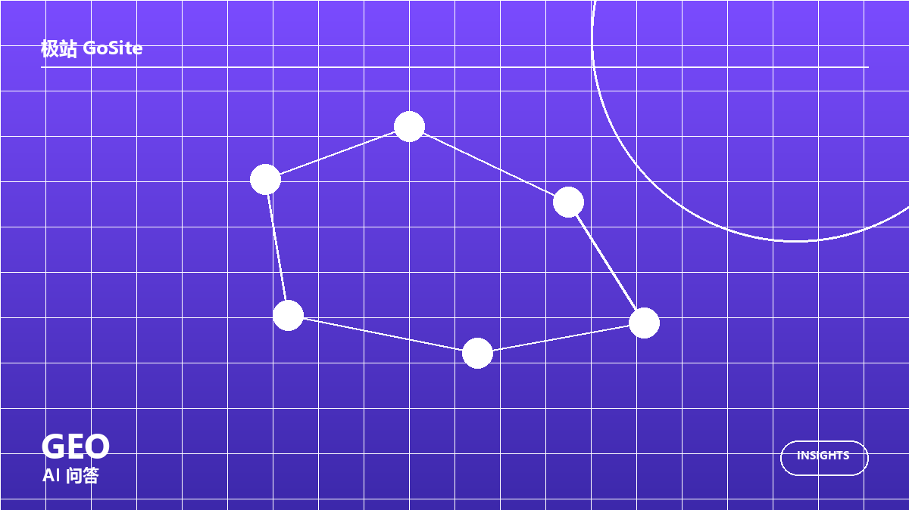
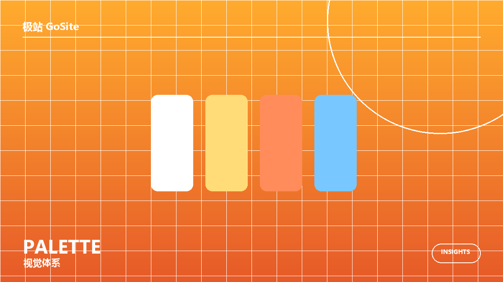
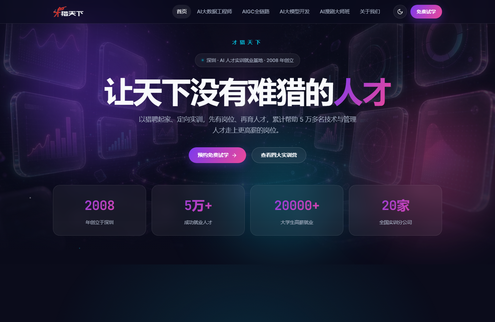
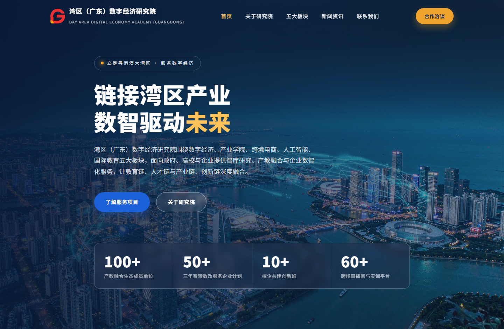
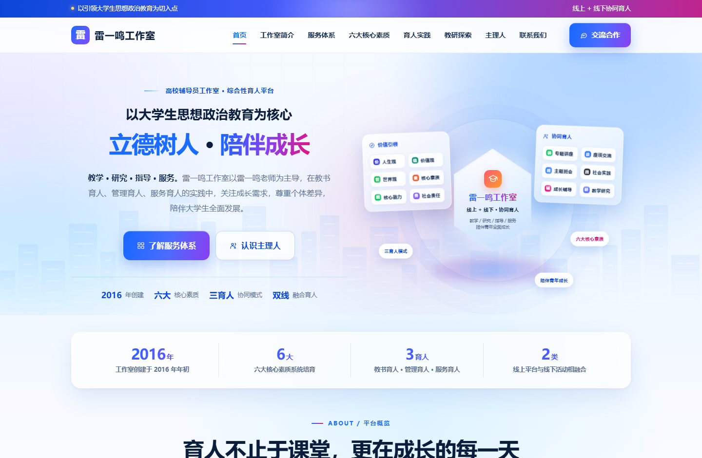

建站观察
建站观察官网最快当天上线之后，怎么让百度和谷歌都读得懂
极站 · AI 建站把纯静态官网、收录结构与全年维护放在一起：从标题描述、站点地图、结构化数据到 hreflang 与国家关键词，说明一个中文官网如何被百度、谷歌与 AI 问答读懂。
阅读全文默认按时间排序，最新文章靠前；可按分类筛选，或翻页浏览全部内容。
建站观察极站 · AI 建站把纯静态官网、收录结构与全年维护放在一起：从标题描述、站点地图、结构化数据到 hreflang 与国家关键词，说明一个中文官网如何被百度、谷歌与 AI 问答读懂。
阅读全文 站点公告
站点公告极站 GoSite 官网 www.gosite.com.cn 正式上线。极站面向中小企业与机构提供 AI 建站服务：AI 辅助栏目规划与页面文案，纯静态中文官网最快当天上线，收录结构同步配好，全年内容更新由服务方代运营。中文官网 399 元/年起，跨境极站全球版 1998 元/站点交付中英双语。
阅读全文 站点公告
站点公告极站 · AI 建站官网 www.gosite.com.cn 正式上线：中文官网 399 元/年包年最快当天上线，跨境极站全球版 1998 元/站点交付中英双语，含收录结构、全球 CDN 与全年内容维护，欢迎咨询下单与服务商加盟。
阅读全文
行业资讯中小企业官网建设的关注点正在从页面是否上线，转向能否被百度、谷歌与 AI 问答读懂，以及上线后是否有人持续维护。
阅读全文
行业资讯面向海外市场的企业需要中英双语乃至更多语言版本，语言标注、当地关键词、币种与文化适配成为建站的新基础项。
阅读全文
行业资讯生成式引擎更倾向摘引含明确名称、数字与边界的事实段落，官网内容结构因此需要更清楚、更可引用。
阅读全文
建站观察以广东省湖南攸县商会官网为例，拆解组织型官网如何安排主视觉、数据、简介、服务体系与动态栏目，让长期可信度与信息可达性同时成立。
阅读全文
建站观察拆解教育培训转化页如何用科技蓝建立信任、用橙红制造行动感，并让密集的课程参数保持可读。
阅读全文
建站观察从抓取、页面结构、站点地图与内容层级四个角度，说明纯静态官网在百度、谷歌与 AI 问答中的可读性优势。
阅读全文
建站观察解析面向生成式引擎的内容组织方式：可被直接引用的事实、问答结构与结构化标注如何配合。
阅读全文
建站观察从品牌色、内容底色与强调色三层关系出发，说明不同类型机构官网的配色取舍与移动端注意点。
阅读全文 建站观察
建站观察说明中英双语站点如何通过 hreflang、规范链接与目标市场用词，避免不同语言版本互相争抢收录。
阅读全文 案例讲解
案例讲解以乡情为纽带的异地商会门户，兼顾会员服务、资讯公开与线上商城。
案例讲解
案例讲解以岗位需求为先的 AI 人才实训基地转化型官网。
案例讲解
案例讲解面向政校企的数字经济智库与产教融合服务平台。
案例讲解 案例讲解
案例讲解用节能数据说话的综合节能服务商官网。
案例讲解 案例讲解
案例讲解合规优先、结构清晰的投融资咨询服务官网。
案例讲解 案例讲解
案例讲解把前沿生命科学理念讲成可长期坚持的日常饮食方案。
案例讲解
案例讲解以大学生思想政治教育为核心的综合性育人平台官网。
案例讲解